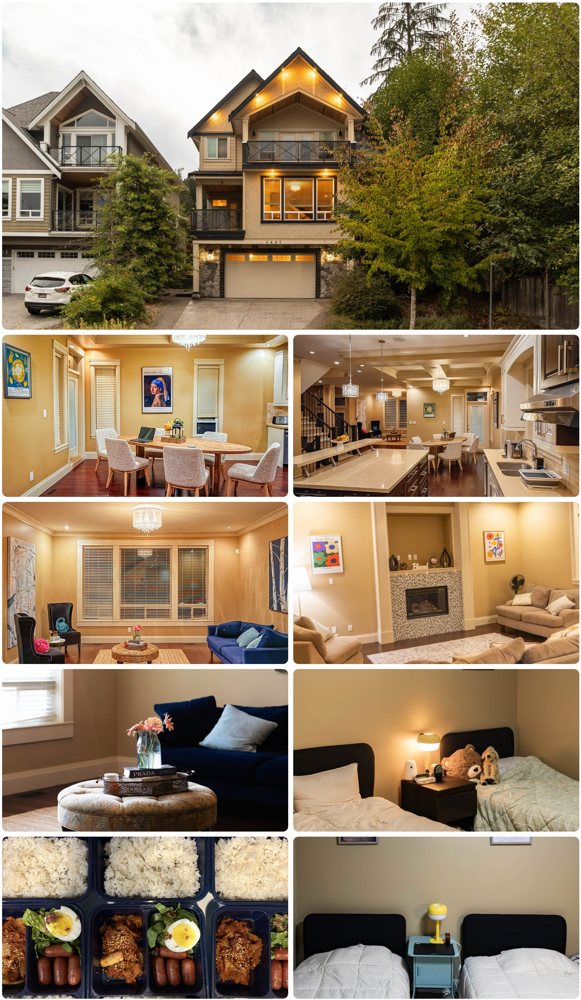

캐나다 BC주 코퀴틀람 — 정규 공립·사립학교 수업 + 하우스형 기숙사 생활관리를 결합한 Grade 5~7 대상 조기유학 프로그램
👤 Grade 5~7📍 Coquitlam, BC🏠 코퀴틀람 제3기숙사🗓 장기(6개월+)
자기관리가 아직 익숙하지 않은 초등 고학년~중1 시기 — 학교 랭킹보다 "방과 후 시간을 누가 책임지는가"가 더 중요할 수 있습니다.
PROGRAM SNAPSHOT
한눈에 보는 프로그램 개요
🎒
대상 학년
Grade 5~7 (초5~중1 전후)
🏫
학교 옵션
공립 Summit Middle / 사립 BCCA
📝
선발 방식
서류 + 인터뷰
🛏
운영 형태
하우스형 기숙사 · 24시간 관리
VIDEO
영상으로 먼저 확인하세요현지 답사 영상 + 에듀스마트 공식 소개 영상
▲ TNS유학이 직접 코퀴틀람 기숙사를 방문해 촬영한 현지 답사 영상
▲ 에듀스마트 공식 소개 영상
PHILOSOPHY
이 프로그램이 지향하는 세 가지중등 예비과정으로서의 설계 방향
1
Whole-Person
영어 기반 전인교육
단순한 언어 습득을 넘어 인지·정서·신체적 성장을 균형 있게 지원
2
Immersion
안전한 영어 몰입
관리되는 기숙사에서 실생활 중심 몰입 + 스포츠·공동체 활동으로 자기주도성과 회복탄력성
3
Global Citizen
글로벌 시민으로의 성장
전문 교육진·생활지도팀의 협력과 학부모와의 정기 소통으로 투명한 교육 환경
SCHOOL OPTIONS
어떤 학교에 다니나요?Summit Middle (공립) vs BC Christian Academy (사립)
공립 · PUBLIC
Summit Middle School
School District 43 (Coquitlam)
코퀴틀람 웨스트우드 플라토 · 미들스쿨 Grade 6~8 · 약 750명 · 1998년 개교
BC주 3번째로 큰 학군(SD43, 학교 70개·학생 약 3.5만 명) 소속
사립 · PRIVATE
BC Christian Academy
Port Coquitlam
Pre-K~12 · 미들스쿨 Grade 5~8 · K-12 전체 약 350명 · 1992년 개교
기독교 가치 기반 교육, 고학년 AP 과정 운영
💡 Grade 5 학생 체크포인트 — Summit Middle은 6~8학년 미들스쿨이라 Grade 5는 별도 공립 초등학교 배정이 필요할 수 있습니다. BC Christian Academy는 미들스쿨이 Grade 5~8이라 Grade 5도 동일 학교에서 바로 시작 가능합니다. 신청 전 학년별 배정을 한 번 더 확인하세요.
LOCATION
코퀴틀람, 짧은 동선이 만드는 안정감학교 · 기숙사 · 생활 인프라가 차량으로 가깝게 연결
🏫
학교
Summit / BCCA
🏠
기숙사
코퀴틀람 제3기숙사
🏬
코퀴틀람 센터
쇼핑·학원·도서관
⛳
와니셋
주말 골프
코퀴틀람은 밴쿠버 도심에서 차로 30~40분 거리의 트라이시티 권역 중심 도시입니다. 신축 단독주택이 많은 한적하고 안전한 주거지역에 기숙사가 위치하며, 코퀴틀람 센터 인근으로 쇼핑몰·도서관·학원가·공원 등 생활 인프라 이용이 편리합니다. 어린 학생일수록 이동 동선이 짧고 단순한지가 적응과 생활 안정에 큰 영향을 줍니다.
DAILY SCHEDULE
하루 일과 — 등교부터 취침까지
08:00 ~15:00
캐나다 정규학교 수업
현지 학생과 동일한 정규 커리큘럼 (Summit Middle / BCCA)
15:00 ~16:00
기숙사로 이동
에듀스마트 차량으로 하교 픽업 및 이동
16:00 ~18:00
방과후 학습관리
영어·수학 보충수업 + 자기주도학습 (요일별 구성)
17:30 ~19:00
저녁식사
한식 위주 식단 제공
19:00 ~20:00
저녁 프로그램
원어민 회화 / 온라인 문법·라이팅 / Homework Help / 액티비티
20:00 ~21:00
Homework
학교 과제 마무리
21:30~
전자기기 반납 · 취침 준비
휴대폰·전자기기 전원 수거 후 취침
📌 요일별 저녁 프로그램 구성 (19:00~20:00 기준)
월
화
수
목
금
원어민 회화
온라인 문법·라이팅
원어민 회화
Homework Help
수영/스케이트
토요일은 와니셋 골프 레슨, 일요일은 개인 액티비티로 운영됩니다.
학교별 등교/하교: Terry Fox 08:00/14:05 · Carney 08:20/14:45 · BCCA High 08:25/14:50 · BCCA Middle 08:35/15:00
STUDY PROGRAM
방과후 · 저녁 학습 프로그램주 5회 토탈 관리로 학습 공백을 만들지 않습니다
📚 방과후 수업
영어 수업 — 주 2회, 회당 2시간
수학 수업 — 주 1회, 회당 2시간
리딩클럽 — 한 달에 한 번 원서 3~4권을 읽고 독후감 제출
자기주도 학습 포함 토탈 관리 — 주 5회
🌙 저녁 프로그램
주 3회 — 저녁식사 후 학습관리 선생님 지도하에 자기주도 학습 (학교 프로젝트·숙제·단어 복습·리딩 프로그램)
주 2회 — 원어민 영어 회화 수업
주 1회 — 온라인 문법 및 라이팅 수업
주 1회 (옵션) — 수영·스케이트 등 액티비티 (입장료 별도)
DORMITORY
코퀴틀람 제3기숙사학생들이 실제로 생활하는 공간

▲ 제3기숙사 외관 · 다이닝룸 · 주방 · 거실 · 학생 침실 · 한식 위주 식단
신축 단독주택형 하우스로, 학생들이 가정집과 같은 환경에서 생활합니다. 공용 다이닝룸과 거실에서 함께 식사하고 학습하며, 침실은 개인 공간으로 사용합니다. 식사는 한식 위주로 제공되어 어린 학생들의 적응 부담을 줄이도록 구성되어 있습니다.
CARE SYSTEM
에듀스마트 하우스형 기숙사 — 9가지 케어
🍚
한식 식단 관리
건강·정서를 위한 한식 중심 식사
🛟
24시간 안전관리
비상 연락망·응급 동행
🧑🏫
멘토링·정서 관리
정기 상담·진로 방향성
🎨
문화·활동 체험
현지 행사·주말 액티비티
🏥
건강·병원 지원
병원 예약·진료 동행
📨
커뮤니케이션 관리
정기 리포트·긴급 소통
✈️
공항 픽업·귀국 지원
픽업·숙소 정리 지원
🧭
신규생 오리엔테이션
계좌·통신·생활정보 안내
📋
생활관리 업데이트
용돈·정기 면담 점검
WEEKEND
주말 프로그램 — 와니셋 골프 레슨
⛳ Swaneset Bay Resort & Country Club (Pitt Meadows)
PGA 전설 리 트레비노(Lee Trevino)가 설계한 코스를 보유한 36홀 골프 리조트에서 매주 소수정예 골프 레슨(1시간)이 진행됩니다. 참가 인원이 모자랄 경우 골프 레슨이 취소되고 한 달에 두 번 일반 액티비티로 대체될 수 있으며, 이 경우 남은 기간에 비례해 월 $100씩 환급됩니다.
COST
프로그램 비용 (연간 기준)
공립 · SUMMIT MIDDLE
기숙사 관리형 (공립학교)
CA$69,000
약 7,490만 원
사립 · BC CHRISTIAN ACADEMY
기숙사 관리형 (사립학교)
CA$76,000 전후
약 8,250만 원 전후
●환율: 2026년 6월 기준 CAD/KRW 약 1,085원 적용, 환전 시점에 따라 변동 가능
●포함: 기숙사 생활관리(숙식·한식 식단·24시간 케어), 등하교 차량, 방과후 자기주도학습(주5회), 영어 주2회·수학 주1회 보충수업, 저녁 학습관리·원어민 회화·온라인 문법, 주말 골프 레슨
●불포함: 교육청(SD43)·사립학교(BCCA) 등록비, 옵션 과목 수업, 추가 액티비티 입장료
●학비 인상 시 차액 추가 납부 필요
FIT CHECK
이런 학생에게 추천합니다
✅ 잘 맞는 경우
처음으로 부모님 없이 캐나다에 가는 초등 고학년~중1 학생
영어 몰입 환경 + 식사·건강·정서는 한국식 케어를 원하는 학생
스마트폰·게임·생활 패턴 관리가 아직 스스로 어려운 학생
정해진 루틴 안에서 적응 기간을 갖고 싶은 가정
🤔 다른 옵션도 검토할 경우
이미 자기관리가 충분히 가능한 고학년 학생
좀 더 자율적인 생활을 원하는 학생 → 가디언형·홈스테이형 검토
현지 가정 문화를 직접 경험하고 싶은 학생 → 홈스테이 관리형 검토
FAQ
학부모님이 자주 묻는 질문
Q1영어를 전혀 못 하는데 수업을 따라갈 수 있나요?
가능합니다. BC주 공립·사립학교는 ELL(English Language Learners) 지원이 제도화되어 있어, 영어가 부족한 학생은 정규수업을 들으면서 ELL 수업을 함께 받습니다. Grade 5~7은 교과 난이도 자체가 높지 않아 고학년보다 적응이 빠른 편이고, 보통 1~2년 안에 ELL을 졸업합니다. 입학 인터뷰는 영어 시험이 아니라 아이의 성향과 단체생활 적응력을 보는 자리이니, 영어 실력 때문에 지레 포기하실 필요는 없습니다.
Q2학생비자와 가디언십은 어떻게 진행되나요?
6개월을 넘는 과정이므로 학습허가서(Study Permit)를 받아야 하고, 미성년자는 캐나다 내 법적 보호자를 지정하는 커스터디언십 선언서가 함께 필요합니다. 순서는 입학허가서 수령 → 가디언 서류 공증 → 비자 신청이며, 에듀스마트가 현지 가디언 역할과 서류 준비를 지원합니다. 비자 심사는 보통 수 주가 걸리므로, 9월 입학이면 늦어도 봄에는 서류를 시작하시는 것이 안전합니다.
Q3의료보험은 어떻게 되나요?
BC주에 6개월 이상 체류하는 유학생은 주정부 의료보험 MSP에 가입해야 하며, 공립 국제학생의 경우 교육청 등록 절차에 보험 가입이 포함되는 것이 일반적입니다. 다만 MSP는 기본 진료만 커버하고 치과·안과·처방약·앰뷸런스는 제외되므로, 대부분의 유학생 가정이 민간 보조보험을 따로 듭니다. 이 프로그램 비용표에는 보험료가 별도 항목으로 표기되어 있지 않으니, 계약 전 견적서에서 보험 항목을 확인하세요.
Q4언제 입학할 수 있고, 언제부터 준비해야 하나요?
캐나다 신학기는 9월이고 2학기는 1~2월에 시작합니다. Grade 5~7은 과목을 1년간 이어가는 방식이 많아 9월 입학이 가장 자연스럽고, 1월 편입은 자리가 있을 때만 가능합니다. 특히 Summit Middle은 인기 학교라 정원이 빨리 차므로, 학교 신청 → 입학허가 → 비자까지의 기간을 감안해 목표 학기의 6개월~1년 전에 시작하시는 것을 권합니다.
Q5방학에는 어떻게 하나요? 기숙사에 남을 수 있나요?
캐나다 학기는 9월~다음 해 6월이고 7~8월 두 달이 여름방학입니다. 프로그램은 정규학기(10개월) 기준으로 설계되어 있어, 대부분의 학생이 여름방학에는 한국에 다녀옵니다. 겨울(약 2주)·봄(약 2주) 방학은 짧아 현지에 머무는 경우가 많습니다. 여름방학 중 현지 잔류를 원하신다면 숙식비가 별도로 발생하므로, 연간 예산을 잡으실 때 이 부분을 함께 계산하세요.
Q6형제자매를 같이 보내면 한 기숙사에 배정되나요?
에듀스마트가 코퀴틀람에서 여러 동의 기숙사를 운영하므로 같은 하우스 배정이 가능합니다. 다만 남매인 경우 성별에 따라 방과 층이 분리 운영되고, 학년대가 크게 차이 나면 생활 리듬 때문에 다른 하우스로 나뉠 수도 있습니다. 신청서에 형제자매 동반임을 명시하고 같은 하우스 배정을 요청하시면 됩니다.
Q7아이가 적응을 못 하면 어떻게 되나요?
먼저 기숙사 안에서 해결합니다. 생활지도 선생님이 상주하고 정기 멘토링·상담이 있어, 문제가 커지기 전에 부모님께 공유되고 조율됩니다. 학교 자체가 맞지 않는 경우 전학도 가능하지만, 공립은 교육청 승인과 빈자리가 필요해 보통 학기 단위로 움직입니다. 실제로 이 연령대에서 발생하는 어려움은 학교 문제보다 향수병·또래관계인 경우가 많고, 이 부분이 관리형 기숙사가 홈스테이보다 유리한 지점입니다.
Q8용돈은 얼마나 주면 되나요?
숙식과 학습이 모두 포함되어 있어 용돈은 간식·문구·친구들과의 외출 정도에 쓰입니다. 이 연령대는 월 100~200 캐나다달러 선에서 시작해 사용 패턴을 보고 조정하는 경우가 많습니다. 에듀스마트가 용돈 사용 내역을 정기적으로 점검해 리포트에 포함하므로, 처음에 한도를 정해 기숙사 측과 공유해 두시면 관리가 수월합니다.
Q9한국 학교 학적은 어떻게 되나요? 돌아오면 같은 학년인가요?
초·중학교는 의무교육이라 자퇴가 아닌 유학에 따른 정원 외 학적 관리로 처리되는 것이 일반적이며, 학교장 허가와 재학 중인 학교·교육청과의 협의가 필요합니다. 복귀 시 학년은 캐나다에서 이수한 학년과 한국 학년을 대조해 학교가 판단하는데, 캐나다 Grade 7은 한국 중1에 대응하므로 대체로 학년 손실 없이 복귀하지만, 최종 판단은 한국 학교와 교육청에 있습니다. 출국 전 담임·교무실에 미리 문의해 두세요.
Q10알러지가 있거나 못 먹는 음식이 있어도 괜찮을까요?
괜찮습니다. 식사를 에듀스마트가 직접 준비하는 기숙사형이라 홈스테이보다 식단 조정이 훨씬 수월합니다. 견과류·유제품 알러지, 종교적 이유의 식단 제한 등은 신청 단계에서 명확히 알려주시면 반영됩니다. 심각한 알러지(아나필락시스 등)가 있다면 응급약(에피펜) 소지 여부와 대응 방법을 사전에 서면으로 공유하시는 것이 안전합니다.